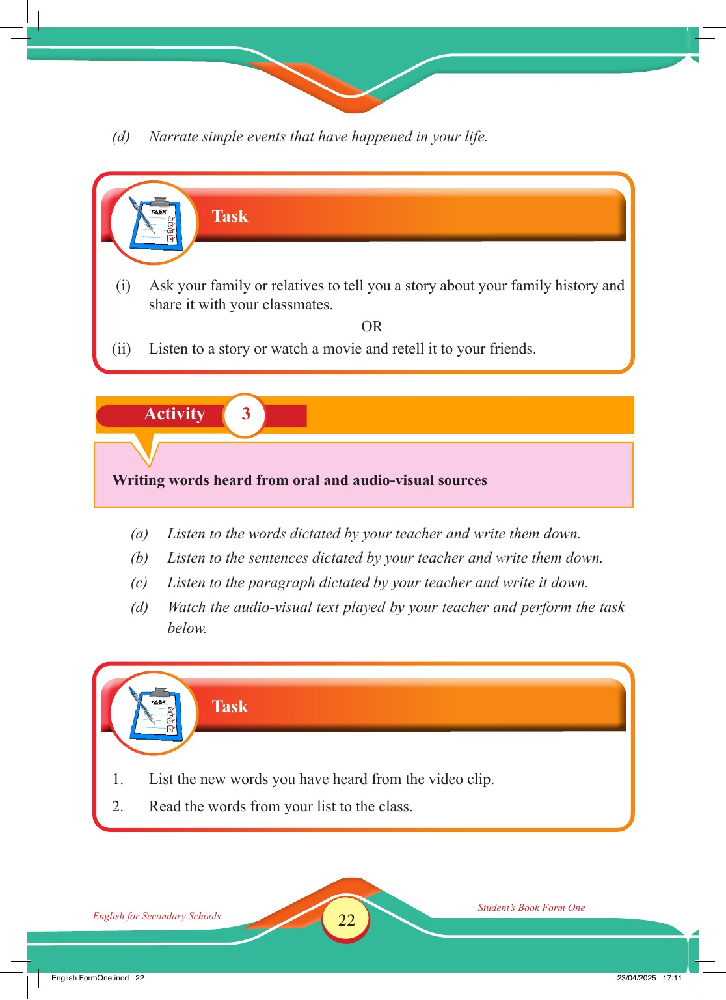

Accessible text transcript - page 22
Use the reader's read-aloud controls or select an individual segment below.
Printed book page 22. (d) Narrate simple events that have happened in your life. Task heading with a clipboard checklist icon Task (i) Ask your family or relatives to tell you a story about your family history and share it with your classmates. OR (ii) Listen to a story or watch a movie and retell it to your friends. Activity 3: Writing words heard from oral and audio-visual sources. Listen to words, sentences, and a paragraph dictated by your teacher and write them down, then watch an audio-visual text played by your teacher and perform the task below. Activity 3 Writing words heard from oral and audio-visual sources (a) Listen to the words dictated by your teacher and write them down. (b) Listen to the sentences dictated by your teacher and write them down. (c) Listen to the paragraph dictated by your teacher and write it down. (d) Watch the audio-visual text played by your teacher and perform the task below. Task: List the new words you have heard from the video clip, then read the words from your list to the class. Task 1. List the new words you have heard from the video clip. 2. Read the words from your list to the class. Return to the page image